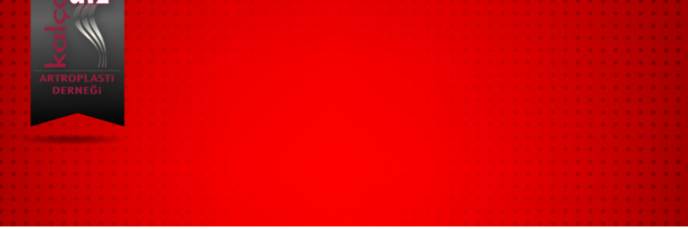

Etkinliğin adı: TRABZON CANLI CERRAHİ SEMPOZYUMU
Tarih: 25/05/2024
Yer: KTÜ FARABİ HASTANESİ AYDIN İNAL AMFİSİ
Etkinliğin düzenleyicisi (Dernek/Bilimsel Kurul): TUSYAD ERZURUM ŞUBESİ
Katılım ücreti: YOK
Etkinliğin kategorisi ve içeriği: (kurs, seminer vb.) SEMİNER
Beklenen katılımcı sayısı: 150
Etkinliğin hedef kitlesi: ORTOPEDİ VE TRAVMATOLOJİ ASİSTAN VE UZMAN HEKİMLERİ
Etkinlik Başkanı /Sekreteri: DOC DR KERİM ÖNER
Varsa düzenleyecek olan organizasyon firması / kurum: YOK
Firma / Kurum adı:YOK
Yetkili kişi:
E-posta: dr.kerımoner@hotmail.com
Telefon: 05434267752
